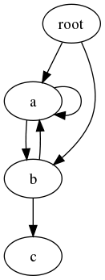

pickle と cPickle – Python オブジェクトシリアライゼーション¶
| 目的: | Python オブジェクトシリアライゼーション |
|---|---|
| 利用できるバージョン: | pickle は 1.4, cPickle は 1.5 |
pickle モジュールは任意の Python オブジェクトをバイトデータに変換するアルゴリズムを実装します。この処理もまたオブジェクトの シリアライズ と呼ばれます。バイトストリームは転送または格納されて、後で同じ特性を持つ新たなオブジェクトを作成して再構築されるオブジェクトを表します。
cPickle モジュールは同じアルゴリズムを Python ではなく C 言語で実装します。それは Python の実装よりも何倍か速いですが、ユーザは Pickle からサブクラス化することができません。サブクラス化が重要ではない用途なら、おそらく cPickle を使いたくなるでしょう。
Warning
pickle のドキュメントにはセキュリティの保証がないことが明確に記載されています。プロセス間通信、もしくはデータストレージに pickle を使用する場合に注意してください。セキュアだと証明できないデータを信頼してはいけません。
インポート¶
最初に cPickle をインポートしようとして “pickle” のエイリアスにするのが一般的です。何らかの理由でインポートに失敗したら、それからネイティブ Python 実装である pickle モジュールをインポートします。このインポートは利用可能ならより速い実装を、そうでないなら移植性の高い実装を提供するものです。
try:
import cPickle as pickle
except:
import pickle
文字列のエンコーディングとデコーディングデータ¶
最初のサンプルは文字としてのデータ構造をエンコードします。それからコンソールに文字列を表示します。それは完全にネイティブ型で構成されたデータ構造を使用します。pickle されたクラスのインスタンスは、この後のサンプルで説明します。オブジェクトの値を文字列で表すために pickle.dumps() を使用してください。
try:
import cPickle as pickle
except:
import pickle
import pprint
data = [ { 'a':'A', 'b':2, 'c':3.0 } ]
print 'DATA:',
pprint.pprint(data)
data_string = pickle.dumps(data)
print 'PICKLE:', data_string
デフォルトでは、pickle は ASCII 文字のみを含みます。もっと効率的なバイナリフォーマットも利用できますが、ここでのサンプルは表示された内容が理解し易いので ASCII 出力のみを扱います。
$ python pickle_string.py
DATA:[{'a': 'A', 'b': 2, 'c': 3.0}]
PICKLE: (lp1
(dp2
S'a'
S'A'
sS'c'
F3
sS'b'
I2
sa.
データがシリアライズされるとき、ファイル、ソケット、パイプ等に書き込むことができます。この後でファイルを読み込んで同じ値で新たなオブジェクトを構築するためにデータを unpickle します。
try:
import cPickle as pickle
except:
import pickle
import pprint
data1 = [ { 'a':'A', 'b':2, 'c':3.0 } ]
print 'BEFORE:',
pprint.pprint(data1)
data1_string = pickle.dumps(data1)
data2 = pickle.loads(data1_string)
print 'AFTER:',
pprint.pprint(data2)
print 'SAME?:', (data1 is data2)
print 'EQUAL?:', (data1 == data2)
ご覧の通り、新たに構築されたオブジェクトは等価ですが、オリジナルと同じオブジェクトではありません。そこは納得できますね。
$ python pickle_unpickle.py
BEFORE:[{'a': 'A', 'b': 2, 'c': 3.0}]
AFTER:[{'a': 'A', 'b': 2, 'c': 3.0}]
SAME?: False
EQUAL?: True
ストリームと連携する¶
dumps() や loads() に加えて、pickle はファイルのようなストリームと連携する便利な関数を提供します。それはストリームに対して複数のオブジェクトを書き込むことができます。そして、書き込んだデータがどんなに巨大でも、先に何回書き込まれたかを知らなくてもストリームからそのデータを読み込めます。
try:
import cPickle as pickle
except:
import pickle
import pprint
from StringIO import StringIO
class SimpleObject(object):
def __init__(self, name):
self.name = name
l = list(name)
l.reverse()
self.name_backwards = ''.join(l)
return
data = []
data.append(SimpleObject('pickle'))
data.append(SimpleObject('cPickle'))
data.append(SimpleObject('last'))
# StringIO でファイルを模倣する
out_s = StringIO()
# ストリームに書き込む
for o in data:
print 'WRITING: %s (%s)' % (o.name, o.name_backwards)
pickle.dump(o, out_s)
out_s.flush()
# 読み込み可能なストリームをセット
in_s = StringIO(out_s.getvalue())
# データを読み込む
while True:
try:
o = pickle.load(in_s)
except EOFError:
break
else:
print 'READ: %s (%s)' % (o.name, o.name_backwards)
このサンプルは StringIO バッファを使用してストリームを模倣します。読み込み可能なストリームを作成するには少しトリッキーなことを行う必要があるからです。シンプルなデータベースフォーマットは pickle を使用してオブジェクトを格納することもできますが、 shelve はもっと簡単に連携することができます。
$ python pickle_stream.py
WRITING: pickle (elkcip)
WRITING: cPickle (elkciPc)
WRITING: last (tsal)
READ: pickle (elkcip)
READ: cPickle (elkciPc)
READ: last (tsal)
データを格納することに加えて、pickle はプロセス間通信にとても扱い易いです。例えば、 os.fork() や os.pipe() を使用して、あるパイプからジョブ命令を読み込み、別のパイプへ結果を書き込むワーカープロセスを作成します。ワーカープールを管理してジョブを送信したり結果を受信したりするコア部分は再利用されます。それはジョブとレスポンスオブジェクトが特定のクラスである必要がないからです。もしパイプやソケットを使用しているなら、他端とのコネクションを経由してデータをプッシュするために、それぞれのオブジェクトをダンプした後でフラッシュするのを忘れないでください。独自のワーカープールマネージャを書きたくないなら multiprocessing を参照してください。
オブジェクトを再構築するときの問題¶
独自クラスと連携するとき、その pickle を読み込むプロセスの名前空間に pickle 化されたクラスが現れることを保証しなければなりません。そのインスタンスのためのデータのみが pickle 化されます、それはクラス定義ではありません。クラス名は unpickle されるときに新しいオブジェクトを作成するコンストラクタを見つけるために使用されます。ファイルへクラスのインスタンスを書き込むサンプルを見てください
try:
import cPickle as pickle
except:
import pickle
import sys
class SimpleObject(object):
def __init__(self, name):
self.name = name
l = list(name)
l.reverse()
self.name_backwards = ''.join(l)
return
if __name__ == '__main__':
data = []
data.append(SimpleObject('pickle'))
data.append(SimpleObject('cPickle'))
data.append(SimpleObject('last'))
try:
filename = sys.argv[1]
except IndexError:
raise RuntimeError('Please specify a filename as an argument to %s' % sys.argv[0])
out_s = open(filename, 'wb')
try:
# Write to the stream
for o in data:
print 'WRITING: %s (%s)' % (o.name, o.name_backwards)
pickle.dump(o, out_s)
finally:
out_s.close()
実行すると、そのスクリプトはコマンドラインで引数として与えた名前でファイルを作成します。
$ python pickle_dump_to_file_1.py test.dat
WRITING: pickle (elkcip)
WRITING: cPickle (elkciPc)
WRITING: last (tsal)
実行結果の pickle 化されたオブジェクトを読み込もうとすると失敗します。
try:
import cPickle as pickle
except:
import pickle
import pprint
from StringIO import StringIO
import sys
try:
filename = sys.argv[1]
except IndexError:
raise RuntimeError('Please specify a filename as an argument to %s' % sys.argv[0])
in_s = open(filename, 'rb')
try:
# データを読み込む
while True:
try:
o = pickle.load(in_s)
except EOFError:
break
else:
print 'READ: %s (%s)' % (o.name, o.name_backwards)
finally:
in_s.close()
このサンプルは SimpleObject クラスが定義されてないので失敗します。
$ python pickle_load_from_file_1.py test.dat
Traceback (most recent call last):
File "pickle_load_from_file_1.py", line 53, in <module>
o = pickle.load(in_s)
AttributeError: 'module' object has no attribute 'SimpleObject'
正しいサンプルはオリジナルのスクリプトから SimpleObject をインポートすると成功します。
次を追加します。
from pickle_dump_to_file_1 import SimpleObject
インポートリストの最後に追加してから、そのスクリプトを再実行します。
$ python pickle_load_from_file_2.py test.dat
READ: pickle (elkcip)
READ: cPickle (elkciPc)
READ: last (tsal)
pickle 化できない値を持つデータ型(ソケット、ファイルハンドラ、データベースコネクション等)を pickle 化するときは特に注意することがあります。pickle 化できない値を使用するクラスはpickle 化されるインスタンスの状態のサブセットを返す __getstate__() や __setstate__() を定義します。さらに新スタイルクラスはクラスメモリアロケータ(C.__new__())へ渡される引数を返す __getnewargs__() も定義します。こういった機能を利用するには、標準ライブラリドキュメントに詳細が説明されています。
循環参照¶
pickle プロトコルは自動的にオブジェクト間の循環参照を扱います。そのため、複雑なデータ構造でも特別に何かをする必要はありません。ダイグラフを考えてみましょう。

グラフは複数のサイクルを含みますが、正しい構造で pickle 化されて再読み込みされます。
import pickle
class Node(object):
"""A simple digraph where each node knows about the other nodes
it leads to.
"""
def __init__(self, name):
self.name = name
self.connections = []
return
def add_edge(self, node):
"Create an edge between this node and the other."
self.connections.append(node)
return
def __iter__(self):
return iter(self.connections)
def preorder_traversal(root, seen=None, parent=None):
"""Generator function to yield the edges via a preorder traversal."""
if seen is None:
seen = set()
yield (parent, root)
if root in seen:
return
seen.add(root)
for node in root:
for (parent, subnode) in preorder_traversal(node, seen, root):
yield (parent, subnode)
return
def show_edges(root):
"Print all of the edges in the graph."
for parent, child in preorder_traversal(root):
if not parent:
continue
print '%5s -> %2s (%s)' % (parent.name, child.name, id(child))
# ノードをセット
root = Node('root')
a = Node('a')
b = Node('b')
c = Node('c')
# エッジを追加
root.add_edge(a)
root.add_edge(b)
a.add_edge(b)
b.add_edge(a)
b.add_edge(c)
a.add_edge(a)
print 'ORIGINAL GRAPH:'
show_edges(root)
# ノードの新セットを作成するためにグラフを pickle/unpickle
dumped = pickle.dumps(root)
reloaded = pickle.loads(dumped)
print
print 'RELOADED GRAPH:'
show_edges(reloaded)
再読み込みされたノードは同じオブジェクトではありませんが、そのノード間の関係は保持されていて、複数の参照先を持つオブジェクトのコピーが1つだけ再読み込みされます。いま説明した内容は pickle を経由する前後でノードの id() 値を調べることで検証することができます。
$ python pickle_cycle.py
ORIGINAL GRAPH:
root -> a (4299725840)
a -> b (4299725904)
b -> a (4299725840)
b -> c (4299725968)
a -> a (4299725840)
root -> b (4299725904)
RELOADED GRAPH:
root -> a (4299726096)
a -> b (4299726160)
b -> a (4299726096)
b -> c (4299726224)
a -> a (4299726096)
root -> b (4299726160)
See also
- pickle
- 本モジュールの標準ライブラリドキュメント
- shelve
- shelve モジュール
- Pickle: An interesting stack language.
- Alexandre Vassalotti による説明